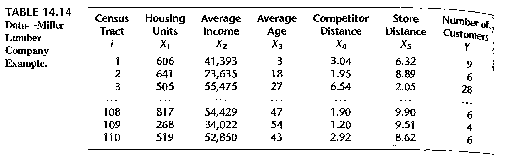
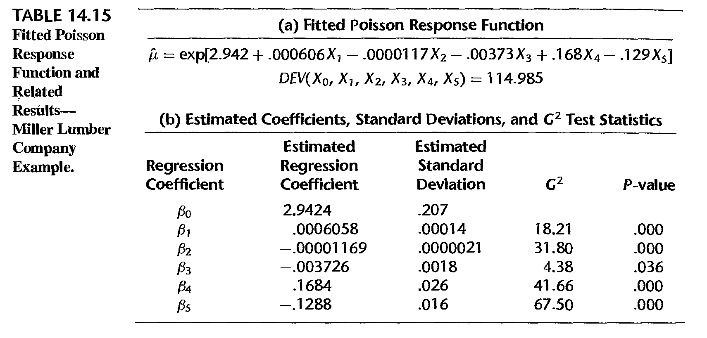
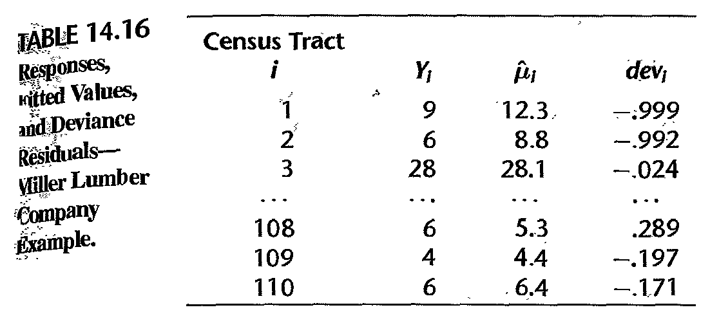
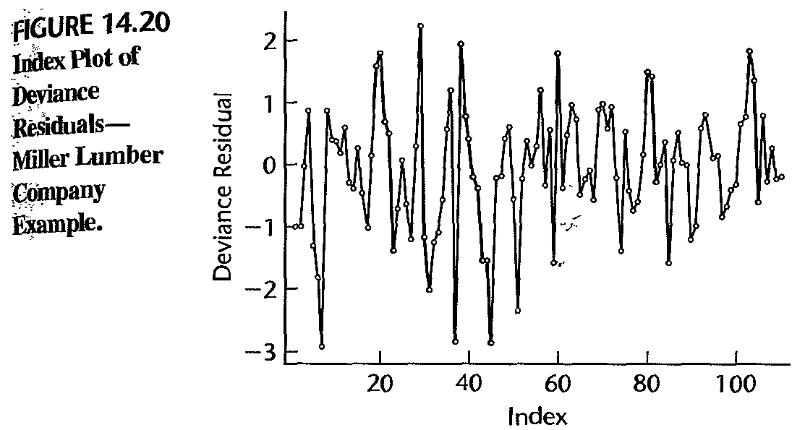

Stat 435 Lecture Notes 6
Xiongzhi Chen
Washington State University

Topics to discuss
- Multinomial regression
- Poisson regression
Multinomial regression
Observations in classes
Each observations \(y_i,i=1,\cdots,n\) belongs to one and only one of \(K\) classes:
- Class \(1\) obs: \(\tilde{y}_{11}\),\(\tilde{y}_{12}\),\(\cdots\), \(\tilde{y}_{1,n_{1}}\)
- Class \(2\) obs: \(\tilde{y}_{21}\),\(\tilde{y}_{22}\),\(\cdots\), \(\tilde{y}_{2,n_{2}}\)
- Class … obs
- Class \(K\) obs: \(\tilde{y}_{K1}\),\(\tilde{y}_{K2}\),\(\cdots\), \(\tilde{y}_{K,n_{K}}\)
Probability mass function
- Model: \(P(y_i=k) = p_{ik}\)
- Equivalent formulation: set \(y_{ij}=1\) if and only if \(y_{i}=j\). Then probability mass function (pmf)
\[P(y_i=k) = p_{i1}^{y_{i1}}\cdots p_{ik}^{y_{ik}}\cdots p_{iK}^{y_{iK}}=\prod_{j=1}^{K}p_{ij}^{y_{ij}}\]
Example with \(K=3\); comparison with Bernoulli setting
When \(\left\{ y_{i}\right\} _{i=1}^{n}\) are independent, their joint likelihood is \[ L=\prod_{i=1}^{n}p_{i1}^{y_{i1}}\cdots p_{ik}^{y_{ik}}\cdots p_{iK}^{y_{iK}% }=\prod_{i=1}^{n}\prod_{j=1}^{K}p_{ij}^{y_{ij}}% \]
Model
- \(Y \in \left\{ 1,2,...,K\right\}\) such that \[ \sum_{k=1}^{K}\Pr\left( Y=k\right) =1\text{ and }\prod_{k=1}^{K}\Pr\left( Y=k\right) >0 \]
- Model \(\Pr\left( Y=k\right)\) by \(X=\left( X_{1},X_{2},...,X_{p}\right) ^{T}\)
- Set \(p_{k}\left( X\right) =\Pr(Y=k|X)\) for \(k=1,\ldots,K\)
- For \(k=1,\ldots,K-1\), set \[\begin{equation} \log\left( \frac{p_{k}\left( X\right) }{p_{K}\left( X\right) }\right) =\beta_{k0}+\beta_{k}^{T}X, \end{equation}\] where \(\beta_{k}=\left( \beta_{k1},\beta_{k2},...,\beta_{kp}\right) ^{T}\)
Equivalent model
Model is equivalent to:
\[ p_{k}\left( x\right) = \Pr(Y=k|X=x)=\frac{\beta_{k0}+\beta_{k}^{T}x}{1+\sum_{l=1}^{K-1}\exp(\beta_{l0}+\beta_{l}^{T}x)} \] for \(k=1,\ldots,K-1\) and \[ p_{K}\left( x\right) =\Pr(Y=K|X=x)=\frac{1}{1+\sum_{l=1}^{K-1}\exp(\beta_{l0}+\beta_{l}^{T}x)} \]
Model: sample version
- The modeling strategy \[
\log\left( \frac{p_{k}\left( x_i\right) }{p_{K}\left( x_i\right) }\right)
=\beta_{k0}+\beta_{k}^{T}x_{i}
\] is equivalent to the formulation provided by
glmnetas \[ P\left( y_{i}=k|X=x_{i}\right) =\frac{\exp\left( \tilde{\beta}_{k0} +\tilde{\beta}_{k}^{T}x_{i}\right) }{\sum_{l=1}^{K}\exp\left( \tilde{\beta }_{l0}+\tilde{\beta}_{l}^{T}x_{i}\right) }% \]
Check on model
glmnetfits model: \[ P\left( Y=k|X=x\right) =\frac{\exp\left( \beta_{k0}+\beta_{k}^{T}x\right) }{\sum_{i=1}^{K}\exp\left( \beta_{k0}+\beta_{k}^{T}x\right) }\text{ for }k=1,...,K \]To check the linearity assumption, i.e., \[ \log\frac{P\left( Y=k|X=x\right) }{P\left( Y=K|X=x\right) }=\exp\left( \beta_{k0}+\beta_{k}^{T}x\right) \text{ for }k=1,...,K-1 \] we need the estimated coefficients for each class probability \(P\left(Y=k|X=x\right)\)
In general, a goodness-of-fit test for the multinomial logistic regression model can be the Pearson’s chi-square test or the likelihood ratio test
Check on model
Checking if the multinomial logistic regression assumption is adequate:
Under suitable conditions, \(E\left( y_{i}-\hat{\mu}_{i}\right)\rightarrow0\) as sample size \(n\rightarrow\infty\) when no regularization that induces bias in \(\hat{\mu}_{i}\) is used in model fitting, where \(\hat{\mu}_{i}\) is the estimated mean for \(y_{i}\)
When LASSO is used, biased is often induced to \(\hat{\mu}_{i}\) as an estimate of \(E\left( y_{i}\right)\), and in this case we can only have \(E\left(y_{i}-\hat{\mu}_{i}\right)\approx 0\) as \(n\rightarrow\infty\)
Poisson regression
Poisson random variable
A Poisson random variable \(Y\) is defined via its pmf as \[ \Pr\left( Y=k\right) =\frac{\mu^{k}}{k!}e^{-\mu}\text{ for }k\in\left\{ 0,1,2,\ldots\right\} \] where \(\mu>0\) is fixed. So, \(E\left( Y\right) =V\left( Y\right)=\mu\).
- Given observations \(\left( y_{i},x_{i}\right), i=1,...,n\), set \[p\left( x_{i}\right) =E\left( y_{i}|x_{i}\right) =\mu_{i}\]
Poisson linear regression model: \[ \log\left( p\left( x_{i}\right) \right) =\beta_{0}+\beta_{1}x_{i} \]
Above model is equivalent to \[ \mu_{i}=p\left( x_{i}\right) =\exp\left( \beta_{0}+\beta_{1}x_{i}\right) \]
Model assumptions
Each \(y_{i}\) is a Poisson random variable with mean \(\mu_{i}\)
\(\log\left( p\left( x_{i}\right) \right)\) is a linear function of \(x_{i}\) for \(1\leq i\leq n\)
The pairs \(\left\{ \left( x_{i},y_{i}\right) \right\}_{i=1}^{n}\) are independent
Joint likelihood function is \(L\left(\beta\right) =\prod\nolimits_{i=1}^{n}\frac{\mu_{i}^{y_{i}}}{y_{i}!}e^{-\mu_{i}}\) and \[ \log L\left( \beta\right) =\sum_{i=1}^{n}\left[ -\exp\left( \beta _{0}+\beta_{1}x_{i}\right) \right] + \\ \sum_{i=1}^{n}\left[ y_{i}\left( \beta_{0}+\beta_{1}x_{i}\right) -\log\left( y_{i}!\right) \right] \] with coefficients \(\beta=\left( \beta_{0},\beta_{1}\right)\)
Estimated model
Maximum likelihood estimate (MLE) \(\hat{\beta}=\left( \hat{\beta}_{0} ,\hat{\beta}_{1}\right)\) of \(\beta=\left(\beta_{0},\beta_{1}\right)\) satisfies \(\hat{\beta}\in\operatorname*{argmin}_{\beta}L\left( \beta\right)\)
- Predictions on \(y_{i}\) can be made as \[ \Pr\left( y_{i}=k|x_{i}\right) =\frac{\hat{\mu}_{i}^{k}}{k!}e^{-\hat{\mu }_{i}}\text{ with }\hat{\mu}_{i}=\exp\left( \hat{\beta}_{0}+\hat{\beta} _{1}x_{i}\right) \]
Namely, \(y_{i}\) is predicted by \(\hat{y}_{i}\) for which \[ \Pr\left( \hat{y}_{i}=k|x_{i}\right) =\frac{\hat{\mu}_{i}^{k}}{k!}e^{-\hat{\mu}_{i}} \]
Model diagnosis
Reduced model \(\mu_{i}=p\left( x_{i}\right) =\exp\left( \beta_{0}+\beta_{1}x_{i}\right)\) versus Full model \(E\left( y_{i}\right) =\mu_{i}\)
Model deviance is \[ D =-2\times\left[ \ln L\left( \text{Reduced model}\right) -\ln L\left( \text{Full model}\right) \right] \\ =-2\left[ \sum_{i=1}^{n}y_{i}\ln\frac{\hat{\mu}_{i}}{y_{i}}+\sum_{i=1} ^{n}\left( y_{i}-\hat{\mu}_{i}\right) \right] =\sum_{i=1}^{n}d_{i}^{2} \]
Model diagnosis
- Deviance residual \[ d_{i}=\operatorname{sgn}\left( y_{i}-\hat{\mu}_{i}\right) \sqrt{-2y_{i} \ln\frac{\hat{\mu}_{i}}{y_{i}}-\left( y_{i}-\hat{\mu}_{i}\right) } \]
- Pearson residual \[ r_{i}=\frac{y_{i}-\hat{\mu}_{i}}{\sqrt{\hat{\mu}_{i}}} \] and Pearson chi-square goodness of fit statistic \[ \xi^{2}=\sum_{i=1}^{n}\frac{\left( y_{i}-\hat{\mu}_{i}\right) ^{2}}{\hat {\mu}_{i}}=\sum_{i=1}^{n}r_{i}^{2} \]
Model diagnosis
- Studentized Pearson residual \[
\tilde{r}_{i}=\frac{r_{i}}{\sqrt{1-h_{ii}}},
\] where
\(h_{ii}\) is the \(i\)-th diagonal entry of \[ H=W^{1/2}X\left( X^{\prime}WX\right) ^{-1}X^{\prime}W^{1/2} \]
\(W\) is the \(n\times n\) diagonal matrix with entries \(\hat{\mu}_{i}\)
\(X\) is the \(n\times p\) design matrix
Model diagnosis
- Poisson model is correct \(\implies\) \(E\left( y_{i}-\hat{\mu}_{i}\right) =0\) asymptotically
Check linearity assumption: plot \(\ln\hat{\mu}_{i}\) against \(x_{i}\)
- Check Poisson model adequacy: plot \(r_{i}\) against \(\hat{\mu}_{i}\)
Check for influential observations: plot delta chi-square statistic \[ \Delta\xi_{\left( i\right) }^{2}=\xi^{2}-\xi_{\left( i\right) }^{2} \] and delta deviance statistic \[ \Delta D_{\left( i\right) }=D-D_{\left( i\right) } \] against \(i\) (or against \(\hat{\mu}_{i}\) or \(\hat{\eta}_{i}\))
Example: data
Miller Lumber Company survey data:
- \(X_1\): number of housing units
- \(X_2\): average income, in dollars
- \(X_3\): average housing unit age, in years
- \(X_4\): distance to nearest competitor, in miles
- \(X_5\): distance to store, in miles
- \(Y\): number of customers who visited store from census tract
(Credit: authors of book “Applied linear statistical models”)
Example: partial data

Example: fitted model

- \(G^2 = - 2 \ln [L(R)/L(R)] \sim\) chi-square distributionExample: diagnosis

- deviance residual vs fitted value; table shows no serious issueExample: diagnosis

- a few large negative deviance residuals associated tracts with zero customers; hard to fit these values
License and session Information
> sessionInfo()
R version 3.5.0 (2018-04-23)
Platform: x86_64-w64-mingw32/x64 (64-bit)
Running under: Windows 10 x64 (build 19044)
Matrix products: default
locale:
[1] LC_COLLATE=English_United States.1252
[2] LC_CTYPE=English_United States.1252
[3] LC_MONETARY=English_United States.1252
[4] LC_NUMERIC=C
[5] LC_TIME=English_United States.1252
attached base packages:
[1] stats graphics grDevices utils datasets methods
[7] base
other attached packages:
[1] knitr_1.21
loaded via a namespace (and not attached):
[1] compiler_3.5.0 magrittr_1.5 tools_3.5.0
[4] htmltools_0.3.6 revealjs_0.9 yaml_2.2.0
[7] Rcpp_1.0.12 stringi_1.2.4 rmarkdown_1.11
[10] stringr_1.3.1 xfun_0.4 digest_0.6.18
[13] evaluate_0.13